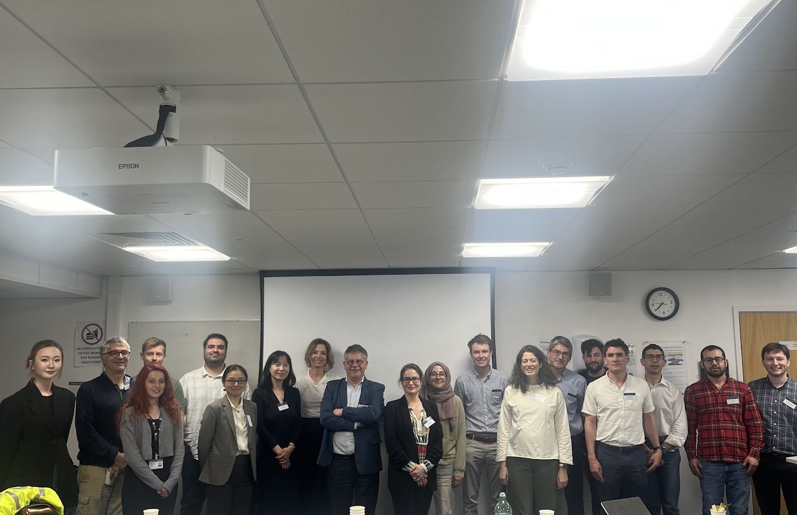

Bio
I am an Assistant Professor of Economics at the University of Bristol. I received my Ph.D. in Economics from the University of Chicago.
My research spans macroeconomics, firm dynamics, corporate finance, technological change, and the economics of innovation and artificial intelligence.
My work examines how intangible capital drives firm outcomes along two dimensions: (i) AI, innovation, and firm dynamics; and (ii) AI, intangible capital, corporate finance, and financial intermediation.
Research papers
13 papers
-
AI-Skilled Labor, Intangible Capital, and Firm Productivity: Evidence from the TensorFlow Shock
Abstract
This paper studies how the complementarity between intangible capital and AI-skilled workers shapes firm-level productivity. We exploit the 2015 release of Google TensorFlow as a plausibly exogenous shock to AI effectiveness. Using a difference-in-differences framework with value-added labor productivity and total factor productivity, we show that firms with a higher AI-worker share increase their productivity. The gains rise with firm size and intangible capital, and the effect is concentrated in the upper part of the productivity distribution. This evidence indicates that the complementarity between intangible capital and AI-skilled labor widens productivity dispersion. We also provide TensorFlow-specific evidence using job postings and worker profiles from Revelio Labs proprietary data.
-
Artificial Intelligence and Workplace Misconduct
Abstract
This paper studies the impact of artificial intelligence (AI) adoption on workplace misconduct. Using regression analysis and a quasi-natural experiment around the open-source launch of Google Brain's TensorFlow machine learning toolkit, we find that firms with higher AI intensity experience significant and persistent declines in workplace violations and penalty amounts. The effects operate primarily through productivity-enhancing complementarities and discretionary expense increases, while labor-adjustment channels play no role. Benefits are concentrated among larger, intangible- and organizational-capital intensive firms, which highlights uneven gains from AI adoption and suggests that AI may widen compliance inequality among firms.
-
Local Credit Expansion, Bank Ownership, and Firm Responses: Evidence from India
Abstract
We examine how bank ownership shapes the transmission of banking reforms to credit expansion and firm responses. Our analysis exploits the Reserve Bank of India's 2006 Bank Authorization Policy as a quasi-natural experiment, combining bank branch data, matched firm-bank loan data, and firm financials in a difference-in-differences design. Private-sector banks expanded their branch presence in underbanked districts, while public-sector banks showed no response. Private-sector lending shifted disproportionately toward firms ranked higher by a pre-reform measure of the marginal revenue product of capital. These firms accumulated capital, although value added showed no statistically significant response. Our results show that a common banking reform can be transmitted differently by public- and private-sector banks.
-
Soft Assets, Hard Credit: Corporate Intangibles and Nonbank Borrowing
Abstract
Intangible capital and nonbank financial institutions (NBFIs) have both grown sharply in the U.S. economy, yet intangible assets make poor collateral for bank lending. Using linked DealScan-Compustat data on U.S. public firms, we examine whether intangible-intensive firms sort toward nonbank lenders and on what terms. We find that intangible-intensive firms rely more on NBFI credit and, when borrowing from nonbanks, pay higher spreads and face stricter collateral requirements. The association with NBFI reliance is statistically significant only for large firms, whereas small intangible-intensive firms have the largest estimated spread premium. Around the U.S. Basel III Final Rule, a tightening of bank capital requirements, we find that high-intangible firms shifted disproportionately toward nonbank credit relative to low-intangible firms and faced higher loan rates. Our results suggest that nonbank lenders expand credit access for intangible-intensive firms, but at a higher price.
-
Artificial Intelligence and Firm Financing
Abstract
This paper studies how firms finance artificial intelligence (AI). We combine a firm-year measure of AI intensity with Compustat balance sheets and DealScan syndicated loan contracts. Alongside reduced-form within-firm regressions, we use two identification designs: a shift-share instrument built from AI diffusion within a firm's industry, and a stacked difference-in-differences design around the year a firm first reaches the AI frontier. We find that as firms become more AI-intensive, they (i) hold less cash and borrow more, (ii) move from revolving credit into term loans, (iii) pay higher interest spreads and pledge more receivables, inventory, and intangibles, (iv) borrow more under earnings-based covenants, and (v) raise more institutional credit, especially from non-bank lenders. Both designs confirm these responses, which accompany an expansion in investment, employment, and profitability. AI adoption thus tends to replace liquidity buffers with drawn and earnings-contingent debt that is increasingly held outside the banking system.
-
The Pre-ChatGPT AI Era and Firm Sales: Domestic versus International Margins
Abstract
We study how artificial intelligence (AI) affects firms' sales in the pre-ChatGPT era. Exploiting the 2015 release of Google TensorFlow as a plausibly exogenous shock to AI-worker effectiveness, we implement a difference-in-differences design that leverages firm-level variation in pre-shock AI exposure. We show that AI adoption generates large and persistent increases in total, domestic, and foreign sales, but only among large firms; smaller firms exhibit no responses. Mechanism evidence suggests that while AI exposure raises operating efficiency and productivity for large firms, firms with financial constraints and limited intangible capital are less able to translate AI into sales gains.
-
Who Invents AI? AI Labor and the Production of AI Innovation
Abstract
I investigate whether a firm's AI labor causes its AI invention. Using firm-level data on U.S. public firms, I exploit the 2015 open-sourcing of TensorFlow, a large drop in the cost of building deep-learning systems, interacted with firms' pre-shock AI-labor exposure. Firms with more AI labor produced more AI patents, especially in deep-learning technologies and among large, organizational-capital rich firms. The effect operates through R&D and AI inventors, and concentrates AI invention among AI-rich firms. An instrumental-variables strategy confirms a positive, AI-specific effect.
-
Strategic Bank Consolidations: Intangible Capital Channel
Abstract
This paper examines how internally generated intangible capital shapes merger patterns and post-merger performance in the U.S. banking sector. We construct a novel measure of intangible capital using granular regulatory expense data and quantify assortative matching between acquirers and targets. Employing a difference-in-differences design with propensity score matching, we causally show that higher assortative matching in intangible capital leads to significant improvements in post-merger bank performance. We complement the empirical analysis with a dynamic search-theoretic model of bank mergers, demonstrating that strategic complementarities in intangibles give rise to assortative matching equilibria. Our findings provide new insights into banking consolidation.
-
Business Dynamism and Innovation: Evidence from Novel 19th-Century Microdata
Abstract
We construct a novel establishment-level dataset combining the nineteenth-century U.S. Census of Manufactures (1850-1880) with patent records from CUSP to examine how innovation shaped firm performance in early industrial America. Patenting establishments were substantially larger than comparable non-patenters across all dimensions (employment, capital, output, and output per worker), with premia further amplified among firms that produced breakthrough inventions. Estimating establishment-level production functions using the Levinsohn-Petrin approach, we find that patenting is associated with higher revenue total factor productivity (TFPR) while leaving markups unchanged on average. Breakthrough innovations, however, are associated with gains on both margins, with a size decomposition revealing the strongest amplification among the largest establishments, consistent with superstar dynamics, yet small breakthrough innovators also capture meaningful gains, suggesting the returns to invention were not exclusive to large firms.
-
Board Characteristics and AI Adoption
Abstract
We study the relationship between corporate board characteristics and firm-level artificial intelligence (AI) adoption. Linking BoardEx director data to Compustat for U.S. public firms, we find at the board level that firms whose directors have larger external networks, more qualifications, shorter tenure, and more diverse nationalities adopt substantially more AI than their industry and year peers, and that this relationship is strongest in small, young, high-growth, and AI-intensive firms. The same profile reappears at the CEO level: CEOs with larger networks, more qualifications, and shorter tenure run firms that adopt more AI. We then analyze why some boards adopt AI more. A board-network shift-share design shows that firms adopt more AI when their directors sit on other, more AI-intensive boards, which we read as evidence of a director-borne diffusion channel. Lastly, we use board-member deaths as a quasi-random shock to board composition and instrument the board index with a signed death shock; the component of board AI-orientation moved by these deaths maps into higher AI adoption.
-
Executive Compensation, Firm Investment and Innovation
Abstract
We study whether tax rules that increase the cost of executive incentive pay affect corporate innovation. The 2017 Tax Cuts and Jobs Act (TCJA) eliminated the Section 162(m) deduction for qualified performance-based compensation, differentially exposing firms that relied more on such pay before the reform. Using pre-reform reliance as a continuous treatment in difference-in-differences and event-study designs, we find that more exposed firms reduce R&D, patent applications, and intangible capital, while capital expenditures do not respond significantly. These firms also reduce performance-based compensation and executive vega, consistent with weaker incentives for managerial risk-taking. The effects are larger among firms with weaker growth opportunities and lower financial resilience, and are robust to controls for other TCJA provisions and alternative exposure measures. The results show that compensation-tax policy can affect innovation through managerial incentive contracts.
-
Intangible Capital, Heterogeneous Borrowing Types, and Firm Dynamics
Abstract
We study how non-rival intangible capital interacts with borrowing structure and financial frictions to shape firm dynamics over business cycles. We show: (i) the positive and significant association between intangible-capital growth and labor productivity growth becomes smaller in recessions; (ii) the non-rivalry of intangible capital is evident such that intangible growth predicts faster sales growth and broader firm scope, yet this relationship declines in recessions; (iii) intangible-intensive firms carry less total and secured debt, and substitute toward earnings-based covenant (EBC) borrowing over asset-based covenant (ABC) borrowing; and (iv) intangible-intensive firms with EBC have tightening financial constraints in recessions, which mitigates the productivity payoff of non-rival intangibles. We rationalize these patterns in a general-equilibrium model in which firms draw EBC/ABC constraints at entry and intangibles are non-rival in the firm production technology. The model yields a credit-amplification mechanism with heterogeneous borrowing types, reconciling the productivity slowdown despite rising intangibles.
-
Intangible Capital and Competition in Ride Sharing: The Case of the Lyft-Motivate Merger
Abstract
This study focuses on estimating the role of intangible capital on firms' competitiveness. We use Lyft's acquisition of Motivate, the biggest bike sharing company in the U.S. at the time, to evaluate the degree to which intangible capital affects the competition between Lyft and Uber. By acquiring Motivate, Lyft gained more consumer data, which we interpret as intangible capital, and bikes' presence on the streets potentially helped Lyft build stronger brand salience. We estimate the effect of the acquisition on Lyft's ridership by employing trip-level ride sharing data from New York City and using a difference-in-difference-in-differences model. We find that the acquisition helped Lyft increase its ridership by around 6%.
Work in progress
- Measuring Bank Intangible CapitalDavid Hong, Mehmet Furkan Karaca
- Local Credit Markets and Firm DynamicsMehmet Selman Colak, Mehmet Furkan Karaca, Mehmet Emre Samci
- Directed Lending and Misallocation in an Emerging EconomyYogeshwar Bharat, David Hong, Mehmet Furkan Karaca
- Non-Banks and Zombie FirmsDavid Hong, Mehmet Furkan Karaca, Sotirios Kokas, Onur Sefiloglu
- Immigration, Industrialization, and Innovation: Evidence from the Age of Mass MigrationThor Berger, Ruveyda Nur Gozen
- Engines of Employment? Evidence from the First General Purpose TechnologyThor Berger, Ruveyda Nur Gozen
Talks 2026
- NovCEPR Annual Meeting of the Macroeconomics and GrowthCEPR
- SepCEPR European Economic Policy RPN Annual ConferenceCEPR
- SepDepartmental SeminarStockholm School of Economics
- Jun1st Piraeus International Economic ConferencePiraeus
- JunBristol Corporate Finance WorkshopUniversity of Bristol
- JunBSE Summer ForumBarcelona School of Economics
- May4th Workshop in Economic HistoryUppsala University
- MayTime Series AI in Macro and FinanceUniversity of Bristol
- MayESCoE Conference on Economic MeasurementKing’s Business School
- MayCardiff Workshop on Trade and DevelopmentCardiff Business School
- MayGlobal INTAN-Invest ConferenceLuiss Business School
- AprScottish Economic Society Annual ConferenceUniversity of Glasgow
- FebThe Productivity Institute Spring Brown BagSeminar series
- Feb2nd CEPR Applied Micro-Economic History WorkshopUniversity of St Gallen
Intangible Capital Workshop

I organize the Intangible Capital Workshop at the University of Bristol, which brings together cutting-edge research on intangible capital, AI, firm dynamics, innovation, productivity, skills, business ownership, and closely related topics shaping current economic research and policy debates.
Intangible Capital Workshop programme (PDF)ForthcomingAI Workshop, University of Bristol. Details to be announced.
Teaching
Fellow of the Higher Education Academy (FHEA), CREATE programme.
University of Bristol, 2022–present
- Macroeconomics for Economics and FinanceUndergraduate
- Growth and DevelopmentUndergraduate
- MSc dissertation supervisionMSc Economics, Finance and Management · MSc Economics with Data Science
University of Chicago, 2017–2022
- The Elements of Economic AnalysisLecturer · Outstanding Undergraduate Teaching Award
- The Elements of Economic Analysis I–IIITutor
- Introduction to Money and BankingTutor
- Introduction to MacroeconomicsTutor
- Advanced Microeconomics, MBATutor
Media & announcements
-
Interview on Faculti
I gave an interview on Faculti (global academic media platform), titled “AI Adoption, Intangible Capital, and the Uneven Future of Workplace Productivity”, where I discuss my ongoing research on how artificial intelligence is transforming firm dynamics, productivity, and the nature of workplace misconduct.
Watch the interview -
Looking for expertise in machine learning and LLMs
I am looking for someone with strong expertise in machine learning and large language models to contribute to text-based analysis in upcoming research projects. If you have strong experience in these areas and are interested in working on research projects, please write me for further details.